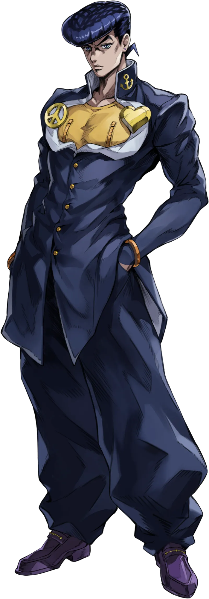
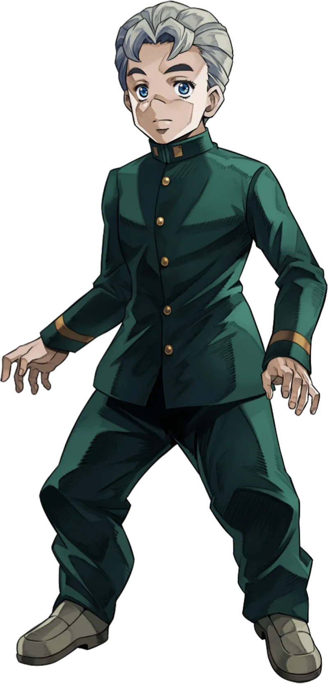
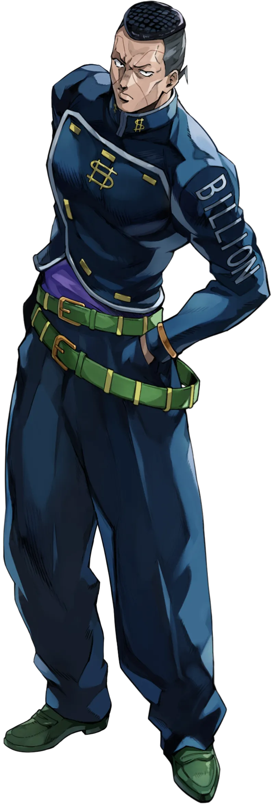
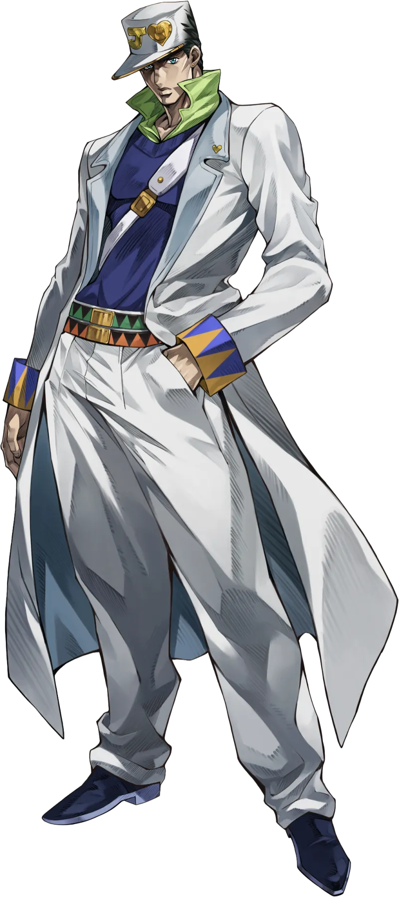
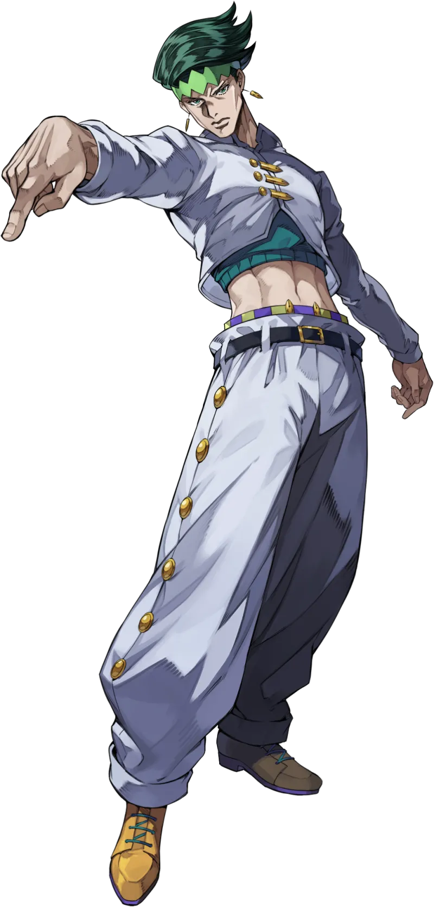

My favorite anime is "JoJo's Bizarre Adventure: Diamond is Unbreakable." It is the fourth part of the JoJo's Bizarre Adventure series, created by Hirohiko Araki. The story follows Josuke Higashikata and his friends as they uncover the mysteries of their town, Morioh, and battle against Stand users with unique abilities.
The anime is known for its unique art style, creative Stand abilities, and memorable characters. It has a mix of action, comedy, and supernatural elements that make it an engaging watch. The story explores themes of friendship, family, and the consequences of one's actions.
Overall, "JoJo's Bizarre Adventure: Diamond is Unbreakable" is a captivating anime that has left a lasting impression on me. I highly recommend it to anyone who enjoys action-packed stories with intriguing characters and imaginative powers.
Main characters

Josuke Higashikata
Josuke Higashikata (東方 仗助, Higashikata Jōsuke) is the protagonist of the fourth part of the JoJo's Bizarre Adventure series, Diamond is Unbreakable, and the fourth JoJo of the series. He is the illegitimate son of Joseph Joestar and Tomoko Higashikata. He also appears as one of the protagonists in the spin-off manga Crazy Diamond's Demonic Heartbreak and the light novel Crazy Heartbreakers.
Josuke is a Japanese first-year high school student residing in the town of Morioh. In the year 1999, he meets Jotaro Kujo, who informs him that he is Joseph's illegitimate son, making him a descendant of the Joestar Family. After his grandfather dies, Josuke takes it upon himself to protect his beloved town from malevolent Stand users.
Josuke is a Stand user that wields Crazy Diamond, a Stand with the power to repair almost anything.

Koichi Hirose
Koichi Hirose (広瀬 康一, Hirose Kōichi) is a primary ally featured in the fourth part of the JoJo's Bizarre Adventure series, Diamond is Unbreakable. He appears briefly as a tertiary ally in the fifth part, Vento Aureo, assisting Giorno Giovanna in the fight against Polpo's Stand, Black Sabbath. Koichi is also the protagonist of the light novel The Book ~jojo's bizarre adventure 4th another day~ and the one-shot Echoes ACT50.
Koichi is a meek first-year highschooler who finds himself embroiled in the world of Stand users as he befriends Josuke Higashikata. He eventually becomes a Stand user himself and wields the sound-manipulating Stand, Echoes, becoming more courageous in the process.

Okuyasu Nijimura
Okuyasu Nijimura (虹村 億泰, Nijimura Okuyasu) is a primary ally featured in the fourth part of the JoJo's Bizarre Adventure series, Diamond is Unbreakable.
Introduced as a tertiary antagonist, Okuyasu quickly allies himself with Josuke Higashikata, becoming one of his closest friends. He is Keicho Nijimura's younger brother, and a Stand user wielding the space-erasing The Hand.

Jotaro Kujo
Jotaro Kujo (空条 承太郎, Kūjō Jōtarō) is the protagonist of the third part of the JoJo's Bizarre Adventure series, Stardust Crusaders, and the third JoJo of the series. He also appears as a primary ally in Diamond is Unbreakable and Stone Ocean, and makes a brief appearance as a tertiary character in Vento Aureo. As a result of all his appearances, Jotaro is the most recurring protagonist in the series.
Jotaro is a Japanese delinquent with Japanese roots from his father's side, and half-British half-Italian roots from his mother Holy's side. Jotaro lives an ordinary life until the Joestar Family's old nemesis, DIO, returns. After seeing Holy fall ill due to DIO's reawakening, Jotaro embarks on a journey across the world alongside his grandfather, Joseph Joestar, and a group of friends in order to save his mother and defeat the vampire once and for all.
Wielding the all-powerful Star Platinum, Jotaro is the first JoJo introduced with a Stand, and is among the most well-known characters of the series. He is the ex-husband of an American woman and father of Jolyne Cujoh, the protagonist of Stone Ocean.

Rohan Kishibe
Rohan Kishibe (岸辺 露伴, Kishibe Rohan) is a primary ally featured in the fourth part of the JoJo's Bizarre Adventure series, Diamond is Unbreakable. He is introduced as an antagonist in the "Let's Go to the Manga Artist's House" story arc, but later becomes an ally and cooperates in the search for Yoshikage Kira. Rohan is also the protagonist of his own spin-off series, Thus Spoke Kishibe Rohan.
Rohan is a successful professional manga artist, having created the series Pink Dark Boy in Weekly Shonen Jump. He is often roped into paranormal events while conducting research for his latest manga. He is the Stand user of Heaven's Door, which he uses to transform others into books and read them for inspiration.
Trailer
Information
Japanese: ジョジョの奇妙な冒険 ダイヤモンドは砕けない
Romaji: JoJo no Kimyō na Bōken Daiyamondo wa Kudakenai
English: JoJo's Bizarre Adventure: Diamond is Unbreakable
Episodes: 39
Aired: Apr 2, 2016 to Dec 24, 2016
Producers: Warner Bros. Japan, Shueisha, Dentsu, Fuji TV, VAP
Licensors: Viz Media, Crunchyroll, Netflix
Studios: David Production
Reasons why I like this anime
The anime features a distinctive art style that sets it apart from other series, with bold character designs and vibrant colors.
The series is known for its intricate plotlines and unexpected twists that keep viewers engaged.
The animation quality is exceptional, with detailed backgrounds and smooth character movements.
The characters are well-developed and have unique personalities, making them relatable and memorable.
The concept of Stands, supernatural manifestations of a character's fighting spirit, adds an exciting and imaginative element to the battles.
The series explores themes of friendship, family, and personal growth, providing emotional depth that resonates with viewers.
JoJo's Bizarre Adventure has had a significant influence on pop culture, inspiring memes, fashion, and other media.
The series has been running for decades, with multiple parts and adaptations, showcasing its enduring popularity.
The music in the anime complements the action and emotional moments, enhancing the overall viewing experience.
The JoJo fan community is passionate and welcoming, providing a space for fans to discuss and share their love for the series.